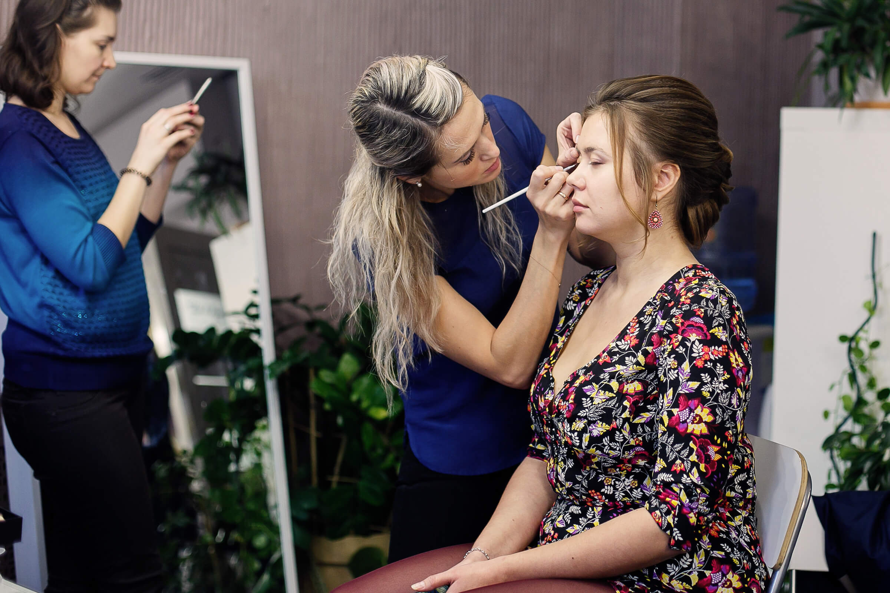
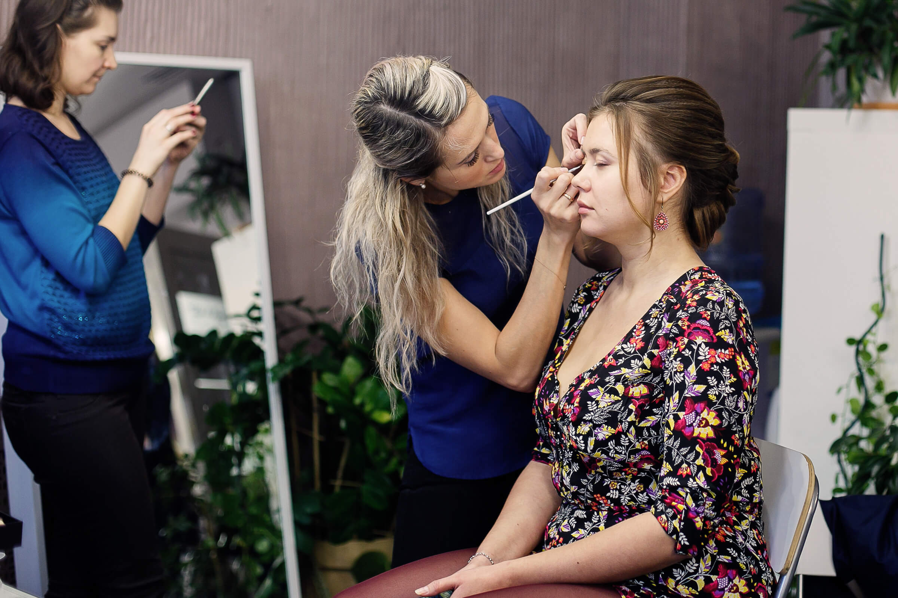

Я посещала профи-курс "Коммерческий макияж". Когда-то я долго выбирала, куда же пойти, выбрала в итоге Лабораторию и не пожалела. Я очень довольна: организацией занятий, темами, которые мы проходили. Мне очень понравилась преподаватель. Я узнала много полезной информации о том, как правильно ухаживать за собой, в зависимости от возраста, как и чем правильно делать макияж. Есть и обратная сторона: я теперь не могу себе делать макияж плохо, я предпочитаю тогда его не делать совсем )))) Спасибо!
Обучаюсь на профи- курсе коммерческий макияж .Очень рада, что учусь тут! Спасибо! За внимательность ко всем деталям, за строгость и небезразличие, за толчок к тому, чтобы самостоятельно анализировать лица, корректировать, подбирать цвета! Учит думать, как максимально подчеркнуть достоинства и скрыть недостатки лица. Я трудный ученик, прогресс идет тяжеловато, но Наталья терпелива, и очень тактична, хоть ей наверное порой очень хочется ругаться, ведь все это она повторяла много раз, а опять я опять допускаю ошибки...:) Настоящий профессионал, и приятный в общении человек:) Спасибо. Желаю студии больших успехов, и чтобы ваши ученики вас радовали:)
«Наталья, я еще раз благодарна вам за знания. Сильная школа. И когда веду МК , понимаю что даже хорошие специалисты многого не знают» Наталья открыла собственную школу в Краснодаре и активно преподает https://www.instagram.com/rikhter_visage/ Это ее отзыв спустя несколько лет после обучения.
Хочу выразить большую благодарность школе, я очень долго искала хорошие курсы и нашла. Очень ответственный педагог и знаток своего дела. Мне очень нравиться подход к каждому человеку и строгость, хотя на первый взгляд так не скажешь. Понравилось, что есть возможность поработать на разных мероприятиях, это очень важно, особенно в момент обучения, так как приобретаешь не только опыт, но и уверенность, работу над ошибками, критику в свой адрес или похвалу. Мне действительно было жаль, что мы так быстро прошли обучение и не хотелось расставаться. Большое спасибо, я очень рада и жду с нетерпением дальнейших мастер классов по ресничкам, массаже и чего-нибудь еще!
Я начинающий визажист! Обучалась у разных мастеров. Лаборатория - самая лучшая в Томске! Спасибо большое за знания и опыт работы! Очень понравилось:
1. Дружная и одновременно рабочая творческая атмосфера
2. Жизненный материал
3. Неусыпный надзор
4. Разнообразный спектр возможностей применить свои знания
Хочу выразить огромную благодарность и уважение своему преподавателю. Этот человек - мастер своего дела. Я безумно рада нашему с вами знакомству. Поначалу я сомневалась, а точно ли я хочу стать визажистом. Но после работы с вами я поняла что точно, несмотря ни на что. Вы вдохновили меня. Спасибо Вам огромное!!
С лабараторией стиль и визаж я познакомилась в этом году.И сразу пошла на профи курс"Моделирование причесок"(при этом не имея какого либо навыка )старалась с первого занятия впитывать всю информацию как губка и подмечать маленькие детали Спасибо большое Оксане за все секреты которыми поделились,с удовольствием применяю их на практике Чуть позже,вдохновленная курсом я решила пройти и профи-курс"комерческий макияж".Подчеркнула для себя много нового и интересного.
Прошла профи курс по макияжу, грустно расставаться, честно говоря( Ну уж очень мне понравилось, теперь я нашла себя и очень хочу совершенствоваться в своих навыках. Спасибо, Наталья, за Ваши мудрые, корректные и грамотные советы! Вы-мастер своего дела и можно позавидовать вашей трудоспособности и самоотдаче(это нельзя не отметить). Очень приятно было находится в лаборатории, ведь там очень уютная и теплая атмосфера. Наташа всегда ответит на все интересующие вопросы по теме и не только)) Всем рекомендую! Наталья, скорее воплощайте новые проекты, а мы подтянемся!!;)
Наталья, благодарна судьбе, что привела меня к Вам, в Вашу лабораторию! В уютной обстановке пролетели месяцы обучения на профи курсах по макияжу. Спасибо Вам большое, Наталья, за Ваш профессионализм, талант, творчество и просто, что Вы добрый и отзывчивый человечек! Хочу пожелать Вам, Вашим коллегам, лаборатории дальнейшего процветания! До новых встреч в Вашей волшебной лаборатории!
Тадам ) вот и закончилось моё обучение премудростям мэйка в Style&Visage lab.. Так уж повелось, что это не совсем мужская работа, и я был одним из немногих учеников-мужчин )Хочу выразить свою искреннюю благодарность девушкам-преподавателям ;) Наташа, спасибо тебе огромное...твоё безграничное терпение поражало меня до последнего дня, ну а твой профессионализм не обсуждается и не поддаётся сомнению априори ))) я рад нашему случайному (как и всё в этой жизни) знакомству, и рассчитываю на долгую и плодотворную дружбу) ни разу не пожалел о том, что пришёл на курсы: всё было понятно, адекватно, и не так уж сложно (вытянул же как-то я все эти "бананы-стрелки-подводки-растушевки) :))) Также хочу выразить слова благодарности Маше, которая поддерживала меня на протяжении всего периода обучения, не давая расслабиться и не давая забиться в самокритику ;) ПС: спасибо девушки, буду периодически заглядывать к вам на чай!!! ну и за мейком для фотосетов ;)
Ну вот и еще одна цель мною достигнута ;) Я закончила, надеюсь успешно, проф курсы по макияжу, это было моей мечтой и по совместительству целью жизни. Так как я не определилась с будущей профессией, я стала искать себя в том, что ко мне ближе всего. Наталья - наичудеснейший творческий человек, вы меня поразили с самого первого занятия, наилучшего подхода к объяснению и донесению материала быть не может. Были моменты когда у меня правда опускались руки (когда приходилось делать кое-что самой), но потом я поняла, и вспомнила фильм "Легенда 17", как тренер, видя потенциал, давил на него еще больше, и мне стало легче. Рано или поздно мы должны будем сделать выбор самостоятельно, начиная от коррекции бровей, заканчивая цветом блеска или помады. Сейчас я замечаю за собой, что стала обращать внимание на макияж знакомых и даже просто случайных людей в автобусе, в магазине, на улице, и мне это безумно нравится ;))) Я не положу эти знания спокойно на полочку, чтобы запылились, я обязательно буду поддерживать и усовершенствовать свой уровень, и надеюсь вместе с вами ;) Спасибо еще раз Вам, вашей лаборатории, за прекрасные воспоминания, отношение к нам, и просто за то, что вы есть! Желаю развития и огромного успеха Style and Visage Lab. ;)
На “Профи – курсах визажиста”
1.В группе всего 4-6 человека!(а не 15, как в других заведениях)
2.Наталья - супер профессионал! Хватает терпения все разжевать, разъяснить, показать, уследить за работой и поделиться своим опытом. Занятия очень интересные и проходят в непринужденной обстановке.
3.Моделей хватало всем и всегда. Даже если модель не приходила по записи, мы их отрабатывали (договаривались, когда было время).
4.За инструментами и косметикой бегать и искать не пришлось, всё необходимое имелось, можно было пользоваться. А также, со временем, инструменты можно было заказать.
5.Ведется цифровое личное портфолио ))))
6.Дружеская обстановка! Все очень радушные.
7.После сдачи экзаменов и вручения сертификата, есть возможность вместе оттачивать свою технику на различных мероприятиях, а так же можно в дальнейшем советоваться над возникающими вопросами.
Благодаря школе я получила новую, совершенно новую профессию-визажист. За время обучения я узнала много нового и интересного в этом непростом деле. Наталья открыла для меня окно в мир искусства и творчества.
Вместо отзыва напишу небольшой рассказ из моей потрясающей жизни))))
С детства любила делать людей красивыми. Просто так. Немного позже, пройдя испытания педагогическим университетом и работой в школе, занялась не менее любимой работой, чем педагогика - КРАСОТА. Выучилась на парикмахера и готовилась к учебе на визажиста. Курсы визажиста выбирала особенно тщательно, и ,собрав достаточно информации, мой выбор межевался между Ридигер-студио и Стиль-Визаж Лабораторией.
... был чудесный морозный день. Крещение. В этом году я-таки решилась на погружение в святую воду, очистить себя любимую. С трепетом и волнением пройдя это испытание, полная восторга, предвкушения и неописуемой радости после сего действия слышу звонок телефона. Это НАТАЛЬЯ!! Пригласила на бесплатное пробное первое занятие! И я подумала, что это знак! И на пробное занятие в ридигер даже не пошла))
И ни разу не пожалела. Я получила всё, что хотела: знания, уверенность в своих силах, душевный подъем, а также бонусом обалденную команду, с которой сотрудничаю по сей день. И надеюсь мы еще горы свернем вместе, тк мне нравится безумно с Вами работать!! (даже "работать" язык не поворачивается, тк сплошное удовольствие)
Вот такая вот история)
Я прошла проф. крусы по визажу и мне всё очень понравилось. Я узнала для себя много нового. На каждое занятие ходила с большим удовольствием!!Я очень осталась довольна! Спасибо вам!!)))
Я прошла профи курсы по макияжу Получила сертификат! Все было очень интересным и полезным, узнала как делать идеальный макияж и ухаживать за своим личиком, для себя это отличное вложение, чтобы выглядеть на все 100% В приятной и дружной обстановке наши занятия проходили весело и непринужденно, при этом мы очень старались! Мастер и преподаватель на курсе, Мария Аглоткова, самый замечательный человечек и требовательный педагог, вся работа находилась под ее личным контролем, все наставления были очень важными для меня, которые я надолго запомню. Мне очень понравился индивидуальный подход!) СПАСИБО!!! Style&Visage lab, вы лучшие!!!
Вот я и закончила профи-курсы по макияжу, делюсь впечатлениями) Я рада, что выбрала лабораторию Style&Visage для обучения искусству макияжа. Долго выбирать не пришлось - так как на сайте все очень подробно расписано, что мне и понравилось. Записалась на курсы сразу же! Понравился сам процесс обучения. Все как и положено, сначала очень подробный теоретический курс, затем захватывающий практический) 3 месяца пролетели как один! Благодаря курсам, я научилась не только делать макияж другим людям, но и себе. Теперь-то я знаю все тонкости) Очень понравилось то, что лаборатория предоставляет возможность поработать визажистом на разных мероприятиях, как после обучения, так и процессе. Все это помогает набрать опыт и скорость работы, а это, согласитесь, немаловажно в профессии визажиста. Огромную благодарность хочу выразить своему преподавтелю, за профессионализм, за критику, за предоставленные возможности!
ВПрошла обучение на профи-курсах по макияжу. Долго и тщательно выбирала школу и не ошиблась, это была любовь с первого взгляда, а точнее с первого занятия!) Наталья настоящий профессионал, замечательный человек и супер-педагог: внимательный и терпеливый! Индивидуальный подход к ученикам (из-за небольших групп), удобное расписание и интересные занятия, косметика и инструменты на время обучения предоставляются, есть возможность участия в мероприятиях, для оттачивания навыков, в общем, подготовка очень серьезная, ну и конечно, дружеская атмосфера! P.S теперь, когда я вижу девушек, с плохим макияжем, руки чешутся их умыть)))), а брови! Брови - это отдельная тема)))))) Спасибо огромное!
Проходила курс "коммерческий макияж". Большое спасибо вам за вдохновение, после курсов хочется творить и обучаться дальше. Получила большое удовольствие от процесса, и конечно, много знаний. Если выбираете курсы, остановите свой выбор на SVLab. Отличная база для начинающих визажистов, в процессе также обучают продвижению, что является большим плюсом. Спасибо ещё раз, было здорово.
Всем доброго времени суток! Хочу выразить благодарность!!! За индивидуальные занятия со мной!!!! В такой кратчайший срок, всего за 6 занятий! Вы так много мне дали интересной и нужной информации, предоставили возможность выполнить макияж под своим чутким руководством! Спасибо Вам за грамотный подход к выбору материала! Спасибо за помощь и терпение! Желаю вам успехов в вашем интересном деле, много учеников и главное чтобы исполнялись ваши желания! Я теперь уверена в том, что мечты сбываются! Ведь я мечтала попасть на курсы визажистов! Благодаря вам моя мечта сбылась! Спасибо! Теперь хочу продолжения!!!!!)))))
Я выпускница профи-курсов по макияжу студии. Признаться, я всегда страдала тем, что очень долго выполняю то или иное задание (так и отзыв я намеревалась написать около месяца). Шутка ли! во время обучения я могла делать дневной макияж 3 часа!!! понадобилось время, чтобы понять почему.. да потому что настолько приятно находиться в студии, общаться с Натальей и со своими "одногруппниками", что и уходить не хочется) и вообще макияж совершенно точно одна из методик по улучшению психоэмоционального состояния! проснулись в плохом настроении? доставайте кисточки и палитры и на встречу новому дню) я в жизни много в чем сомневаюсь, но точно не сомневалась где мне учиться визажу, и вам не советую (сомневаться)) приходите и берите, учитесь, спрашивайте, спорьте, радуйтесь! а я в свою очередь благодарна преподавателям за эти прекрасные 2,5 месяца)))
Закончила профи-курсы по макияжу!
Спасибо за знания теоретические и практические :) Безумно понравились занятия. Очень было интересно пробовать новые техники и назначения. Как было здорово с каждым занятием понимать, что рука и глаз уже набиваются :) Теперь будем работать-работать-работать ) Планирую пойти на курсу по моделированию причесок, стилистике, и возможные мастер-классы! Спасибо за уют и приятное время :)
Анастасия владелец собственной студии и школы в Томске
Здравствуйте! Хочу поделиться своими впечатлениями от курсов Style&Visage lab. Меня всегда привлекала индустрия красоты, но всё как-то не решалась пойти по этому пути. Одним прекрасным солнечным днём ВКонтакте пришло приглашение на профи-курс "Коммерческий макияж". Я заинтересованно изучила на сайте Школу и положительно откликнулась на приглашение. Пришла на вводный урок, который проводила мой преподаватель Мария Аглоткова и поняла, это именно то, что мне нужно! На курсах была очень приятная атмосфера, большое разнообразие косметики, огромное желание работать. Мария отлично находила подход к любому человеку, снимала напряжение, доступно объясняла. Мария, выражаю Вам огромнейшую благодарность за профессионализм и терпение, за опыт и секретики, которыми Вы так щедро делились! Вы очень чутко разбираетесь в специфике макияжа! С Вами интересно, познавательно, тепло и уютно!
Спасибо Style&Visage lab за то, что Вы есть и даёте возможность Нам (ученикам) реализоваться! Желаю успехов и процветания!
Окончив Профи-курсы по макияжу, я была очень рада, что наконец освоила профессию визажиста, однако было примешано и чувство грусти, что больше не будет этих 3-часовых занятий по вечерам.. С их уютной дружеской и даже немного заговорческой чисто девчячей атмосферы )) Я очень рада, что прошла обучение именно в этой школе и именно под чутким руководством своего преподавателя. Практически все мои модели после макияжа говорили, что атмосфера здесь ну просто нереально крутецкая )) им не хотелось уходить, а уж тем более приходить домой и смывать макияж )) Спасибо еще раз за это чудесное время, за навыки и знания, которые вы мне дали и за то, что нас не забываете :)
А дело все в том, что я бухгалтер. Соответственно красок в повседневной жизни у меня не много.
И еще мне 25, в это время уже начинаешь задумываться о словах Коко Шанель: "В 20 лет ваше лицо дает вам природа, в 30 - его лепит жизнь, но в 50 вы должны заслужить его сами..." Ее цитат можно много вспомнить, рассуждая о Наташе и ее Лаборатории :)
Наташа показала мне краски. Дала возможность научиться делать себя, возможность видеть радость других. После ежедневного с "9 до 6" по окончании занятия видишь радость в глазах девушки, которая доверила тебе свое собственное лицо, или волосы или гардероб. Все меняется!
Мне пока доступно только мастерство визажа. Впрочем, уже этого достаточно, чтобы начать менять себя и свою жизнь. Я мастерски рисую себе глазки перед работой, не тратя на это драгоценные утренние минуты. Я тренируюсь на подругах, которые потом весь вечер после общения со мной не вспоминают о своих проблемах, потому что чувствуют себя прекрасными, хотя казалось бы, что там? Тени, тушь и помада? :)
Хочу научиться делать прически, мне до этого осталось совсем чуть-чуть. Хочу научиться всему. Просто потому что это совсем не так, как каждый день. За сданный вовремя отчет спасибо никто не скажет :) А здесь говорят. И говорят даже не столько словами, сколько я это просто вижу. Радость, которую создала я сама.
И вообще, "Не бывает некрасивых женщин, бывают ленивые" - опять же Коко Шанель!
Близится завершение моего обучения в https://vk.com/svlabtomsk по профи курсу "коммерческий макияж". Это действительно интересный опыт. Домашняя атмосфера царит в студии, и ты не торопишься уходить домой после занятий, охота подольше задержаться, ещё что-то уточнить, рассказать о своих успехах, или поделиться проблемой, с который ты столкнулась во время отработки задания, обсудить тему, современные тенденции, да и просто попить чай в дружественной обстановке) помимо всего этого на каждом занятии тебе дают фундаментальные знания теории визажа: цветотипы, идеальные пропорции, уход за кожей, современный рынок косметических средств и инструментов. И все это очень подробно, вдумчиво и со знанием дела. Не идёт навязывание каких то брендов, не пытаются продать чемодан "средств для начинающего визажиста", ты получаешь именно тот базис, на который в последствии наслаивается практика, и с которым ты начинаешь ориентироваться в данной сфере и понимать что к чему. В лаборатории нам предоставлена уникальная, на мой взгляд, возможность работы с разными марками. Когда ты работаешь и сам выбираешь для себя то, с чем тебе в последствии действительно комфортно будет работать.
И, конечно, хочется сказать большое человеческое СПАСИБО нашему преподавателю. За её профессионализм, терпение, за её умение преподнести информацию понятным языком, за искреннее участие, за её потрясающее чувство юмора))) в ходе учебы, у меня, конечно, были и успехи и неудачи) но в преддверии экзамена я понимаю, что действительно это моё, это для меня) Я хочу стать успешным визажистом и специалистом в своей сфере) Ведь, согласитесь, дорого стоит не замечать времени, находясь на работе и занимаясь действительно любимым делом)
Благодаря школе во мне укрепилось желание работать дальше и не переставать развиваться. Спасибо https://vk.com/svlabtomsk за такой курс и возможность научиться у Вас мастерству) Если вы ещё сомневаетесь и выбираете школу для обучения -выбирайте https://vk.com/svlabtomsk, не пожалеете)
А я желаю рассказать о профи-курсах по макияжу, которые посещаю и скоро закончу( p.s.хотя, если честно очень не хочется этого делать, но кто на них был, думаю со мной согласятся ). Когда я шла на эти курсы у меня уже были свои представления о профессии визажиста и очень хотелось, что бы они сбылись. Что и произошло!!! Я этому очень рада и благодарю своего преподавателя, сильную, настойчивую и в тоже время мягкую Женщинуstrong> с большой буквы!!!! Для начала профессия визажиста очень кропотлива, детальна, но в тоже время захватывающа! Ты, во-первых встречаешь много разных и интересных людей, не только лиц, а людей с их характерами и внутренним миром, который ты можешь подчеркнуть, выявить с помощью макияжа!!! Да,да!!! Вот например нежность в женщине ,можно отобразить на лице с помощью нежных, легких тонов теней и их сочетания, нежного румянца!!! Правда интересно??? Мне очень!!! Во- вторых профессия визажиста тренирует терпение, выдержанность, точность в деталях, даже в самых мелких! Ты учишься любить себя, свою работу и главное ты начинаешь видеть, любить людей. Многие сейчас в нашей суете перестают замечать друг друга!!! А самое главное результат: благодарность и радость женщин, клиенток, когда они видят себя красивыми в зеркале!!! Их радость откликается в наших сердцах!!! Большей похвалы и не придумаешь! Все это ,я получила, испытала на этих замечательных курсах!! Преподаватель замечательный человек, мастер своего дела!! Как мне сказала, одна моя клиентка: "У нее невозможно не научится"! А когда исходит от человека со стороны, это, я думаю о чем-то говорит!!! Так что Девушки, которые решаются, но еще боятся, думают, что не научатся макияжу, не бойтесь! Все научатся, у всех все получится!!! Дерзайте!!! И еще! Хоть я и не всех знаю в коллективе школы других преподавателей, но то что они сплоченный, дружный профессиональный коллектив, я увидела и наслышана!!! И я решила посетить еще курсы причесок!! Обучаться буду только здесь!! Огромная благодарность вам от меня и создателям этих курсов!!! Новых идей вам и большого успеха в дальнейшем!!
О курсе коммерческий макияж. Отучилась на этом замечательном курсе, получила стоооолько полезной информации! Особенно, когда до этого, ты занимался совершенно другим и это для тебя абсолютно новое дело, которым ты планируешь зарабатывать. Занятия проходили в режиме показ с объяснением и проработкой каждой детали, т.е. показали как сделать бровь справа, ты делаешь слева, никакой "воды",все конкретно и по делу. И что немаловажно, косметика, на которой обучают, самых различных марок, есть и Paese, Inglot, Just, Dior и Maybelline есть, до бесконечности можно перечислять, т.е. собраны продукты которые действительно работают!!! И которые реально пробуешь и понимаешь к чему тянется рука! Преподаватель всегда готов помочь и ответить на все вопросы. Никто не занимается посторонними делами и лишними разговорами, тратой времени, все погружены в атмосферу красоты, а особенно приятно, когда модель встает после долгих мучений и говорит: "ухххх, как красиво"!!! На занятия всегда несешься и просто впитываешь знания. Я очень рада, что выбрала лабораторию, там работают настоящие профессионалы. А еще там очень много интересных курсов, которые помогут обрести дополнительный доход, проводится множество мастер классов и курсов для себя любимых, очень много всего полезного, что можно посетить и совершенствоваться каждый день и радовать или поражать близких. Для себя я сделала вывод, что стоит только окунуться в эту атмосферу, как она полностью тебя поглотит Спасибо лаборатории за все!!!!
Оооо, эти занятия - просто песня! Приходишь после работы раздраженная, усталая, вялая. Уходишь усталая - но в хорошем настроении, и намерением обязательно продолжать обучение.
Узнала много нового про свое лицо. Вот реально! Казалось бы - пользуюсь косметикой, уж чего могла не узнать? Ан нет. И глаза интереснее лучше, чем думала, и форма лица почти идеальная, и черты лица правильные и соразмерные.
Кисти! Их можно долго разглядывать, теребить - работать правильно подобранной кистью наслаждение. На первых занятиях с моделью тряслись руки. Теперь все гораздо уверенней). Помимо классических схем макияжа, обязательно учимся как применять их на конкретных лицах, как их корректировать по ходу. Оказывается, существует так называемая базовая французская схема, которая применима абсолютно ко всем. Просто нужно учитывать некоторые нюансы.
Преподаватель. Наташа чудесный, вдумчивый, внимательный преподаватель. Урок длится от начала - и пока не закончим тему. Отвечает на все вопросы по теме и не совсем - пользуемся покладистостью преподавателя от души)
Если есть какие-то пожелания, Наташа всегда их учитывает.
В студии есть чай, можно приносить с собой плюшки - после работы это как нельзя актуально. Перед занятием и в течение делаем перерыв на попить чаю.
Много дружеского теплого общения)
- -Каким образом подготовить кожу, чтобы сделать макияж стойким.
- -Почему важно менять уход за кожей зависимости от возраста.
- -Как выбрать подходящую косметику.
- -Способы решения таких проблем как отеки, акне, шелушение, сухость, жирность кожи.
- -Почему важно читать состав косметики и как это делать правильно.
- -Какие компоненты в косметике опасны и почему.
- -Какие косметические процедуры не стоит делать перед макияжем.
- -Как правильно выполнять демакияж, чтобы не ускорить процессы старения.
- -Как легко искать моделей для курсов и почему важно делать это самостоятельно.
- -Как сделать из моделей клиентов. Как сделать хорошее портфолио без больших затрат.
- -Что можно сделать, чтобы рекламировать свои услуги еще в процессе обучения.
- -Зачем и какой контент создавать визажисту.
- -Как ставить цены на свои услуги.
- -Почему нельзя ставить низкий ценник.
- -Как начать зарабатывать сразу после курсов.
- -Какие инструменты реально нужны визажисту.
- -6 правил приобретения качественных кистей.
- -Какие косметические средства должны быть в наборе визажиста.
- -Знакомство с косметическими must have. Все пробуем и учимся оценивать косметику с «первого взгляда».
- -Возможно ли работать на 1 марке косметики или это рекламный ход. Что в кейсах у известных визажистов.
- -Есть ли различия между косметикой класса люкс, масс-маркет и профессиональной.
- -Как формировать свой стартовый набор косметики.
- -Что такое идеальные пропорции лица.
- -Нужно ли «дотягивать» лицо клиента до идеала.
- -Свето-теневой рисунок лица как основной инструмент визажиста.
- -Всем ли нужно делать затемняющую коррекцию и что такое стробинг, дрейпинг, бейкинг?
- -Техники коррекционнного макияжа различных форм лица.
- -Как подобрать клиенту форму бровей. Всем ли идет модная форма.
- -Способы работы с маленькими, выпуклыми, глубоко посаженными глазами, как работать с нависающим веком и многое другое.
- -Способы коррекции формы носа, губ, подбородка.
- -Теория цвета.
- -Способы построения гармоничной цветовой композиции вмакияже.
- -Прикладное использование цвета для коррекции дефектов кожи.
- Метод цветовой нейтрализации или макияж без тонального крема.
- -Специфика восприятия цвета и фактуры. Способы применения.
- -Неочевидные способы подбора оттенков теней.
- -Как избежать эффекта «заплаканных глаз» и «желтых зубов»
- -Как правильно подобрать цвета косметики в стартовый набор, чтобы они подходили большинству клиентов.
- -Критерии качественного коммерческого макияжа.
- -Почему важно научиться «читать» лицо модели.
- Почему не всем моделям подойдут схемы «вертикальная растушевка, «диагональная растушевка», «яблоко», «акцент на нижнее веко».
- -Практический анализ собственного лица. Коррекция бровей.
- -Подбор и выполнение оптимальной схемы nude makeup для себя.
- -Отработка анатомического nude makeup на модели.
- -Отработка дневного, вечернего анатомического макияжа на моделях.
- -Какие схемы существуют при работе с азиатским веком.
- -Как правильно подобрать финишный эффект средства для макияжа глаз.
- -Как «открыть» азиатские глаза с помощью макияжа.
- -Создание натуралистичного подвижного века с помощью карандашной техники.
- -Специфика работы с ресницами.
- -Специфика построения стрелки.
- -Секрет симметричных стрелок.
- -Must Have среди средств для стрелок от преподавателя.
- -Как выполнить стрелки на «сложном» веке.
- -Губы: обзор стойких красных помад для создания голливудского макияжа.
- -Продолжаем учиться читать лица моделей.
- -Как подобрать оптимальную схему вечернего макияжа.
- -Как понять допустимую степень яркости макияжа для клиента.
- -Стоит ли беспрекословно выполнять заказ клиента или предлагать альтернативную схему макияжа. Способы убеждения.
- -Трансформация дневного макияжа в вечерний.
- -Учимся подбирать подходящую схему макияжа по фото.
- -Работа кремовыми/гелевыми текстурами, пигментами.
- -Специфика мужского макияжа.
- -Почему мужской макияж кардинально отличается от женского.
- -Особенности подготовки мужского лица к макияжу.
- Макияж и щетина: секреты и тонкости.
- -Специфика коррекции и макияжа мужских бровей.
- -Обзор незаметных способов акцентировать глаза.
- -Почему порой у мужчин теней на веках больше, чем у женщин.
- Стробинг в мужском макияже.
- -Специфика свадебного макияжа.
- -Как обеспечить высокую стойкость макияжа.
- -Организация эффективного процесса работы визажиста на выезде.
- -Способы осмечивания свадебного макияжа.
- -Специфика подбора цветовой гаммы макияжа.
- -Обзор актуальных свадебных схем макияжа.
- -Изучаем и зарисовываем возрастные изменения на фейс-чартах.
- -Какие методы позволяют достичь эффекта видимого омоложения.
- -С какими проблемами сталкиваются дамы элегантного возраста.
- -Способы подбора цветовой гаммы макияжа.
- -«Сложные места» лифтинг-макияжа или чему уделить особое внимание.
- -Психологические аспекты работы с клиентом.


Анастасия щедро делится знаниями и обрабатывает огромное количество профессиональной информации - обзоры новинок, прямые эфиры топовых визажистов. Свой профессиональный успех она измеряет успехом своих учеников. Готовьтесь много думать на ее занятиях, т.к. работа визажиста подразумевает отличные способности к анализу, а не талант или творческие наклонности. 90% выпускников Анастасии работают по профессии. А вот неполный перечень известных в России и за рубежом преподавателей, у которых прошли обучение ваши преподаватели: голливудский визажист Евгений Лукьяненков, Наталья Найда, Денис Карташов, Людмила Тараканова, Виктория Алексеева, Ольга Романова, Елена Ясенкова, Андрей Лоос, Дарья Холодных, Ксения Никитина, Ирина Абызова, Елена Мотинова, Виктория Моисеева, Дмитрий Ряшин...
Мне очень приятно, когда наши выпускники по прошествии нескольких лет пишут слова благодарности за очень сильные знания, полученные у нас. Они это делают уже не на эмоциях, как те кто только выпустился, а сравнивая себя с коллегами или после обучения в других школах.»


- Подготовка лица к макияжу - 2050р.
- Как стать успешным визажистом и начать зарабатывать сразу после курса - 2050р.
- Инструменты и косметика. Инструкция к применению - 2050р.
- Морфология лица - 4090р.
- Основы цветометрии в макияже - 2050р.
- Анатомические техники в макияже - 8200р.
- Специфика работы с азиатским типажом - 2050р.
- Профессионально о стрелках - 4090р.
- Вечерний макияж - 6150р.
- Макияж особого назначения: мужской, свадебный, лифтинг-макияж - 8200р.
- Цифровое фото моделей в формате «до и после».
- Занятия в группе до 6 человек.
- На время занятий мы предоставляем кисти и декоративную косметику.
- Занятия проводятся по расписанию.
- Все 11 модулей нашего курса, а это 22 занятия и 66 учебных часов. 25 т.р.
- Пакет «Делай локоны». Посетите 3 занятия и создавайте сразу полный образ - 4500р.
- Пакет «Продающее портфолио». Профессиональные фото Ваших учебных работ, сделанные фотографом - 6500р.
- Пакет «Бровист. Самая соль». Это дополняющая макияж профессия повысит Ваш заработок - 3000р.
- Все 11 модулей нашего курса, а это 22 занятия и 66 учебных часов.
- Пакет «Делай локоны». Посетите 3 занятия и создавайте сразу полный образ
- Пакет «Продающее портфолио». Профессиональные фото Ваших учебных работ, сделанные фотографом.
- Пакет «Бровист. Самая соль». Оформление бровей и макияж родственные услуги. Повысьте свою востребованность!
- 2 часа шоппинг сопровождения для составления кейса визажиста.
- Пригласите 1 подругу и получите
- скидку 1250р.,
- 2 подруги - 2500р.,
- 3 подруги - 5000р.,
- 4 подруги - 6250р.
 


Заменяют Анастасию Наталья Деева, автор курса, практикующий визажист и Анастасия Моргунова - практикующий визажист и педагог нашей школы.

Вот и я закончила профи-курсы по макияжу в лаборатории и пишу свой отзыв:) Вопросом о курсах по визажу интересовалась много лет, но, как это обычно бывает, то времени не хватает, то энтузиазма, то еще чего-то. Но в этом году решила озадачиться этим вопросом всерьез и начала искать и изучать Томский школы по визажу. На слуху все это время была школа Ридигер, но почитав информацию и отзывы о разных школах, остановилась для себя на лаборатории стиля и визажа :) понравилось подробное описание курса на сайте, все вопросы, которые мне казались важными в обучении, были представлены в программе. Удобный график занятий, удобные системы оплаты курсов, множество положительных отзывов - все это привлекло мое внимание к лаборатории. Мое мнение не изменилось и после первого занятия. В процессе обучения чувствуешь себя комфортно, на все вопросы получаешь обоснованный ответ, советы, практические примеры. Первое занятие пролетело как за пять минут, казалось, я бы просидела спокойно еще два с половиной часа:) очень теплая атмосфера, домашняя, можно даже чай с плюшками попить после работы и во время занятия, если возникнет такое желание :) не знаю, практикуют ли такое в других школах, но в лаборатории можно посещать дополнительные тренировки на различных мероприятиях, это очень полезно для того, чтобы "набить руку", а так же для тех, кто не может себе позволить сразу обеспечить себя всеми необходимыми материалами и начать свою практику, чтобы не терять приобретение навыки. Это просто бесценный подарок от школы :) на занятиях вы не только научитесь правильно наносить и подбирать макияж, но так же узнаете множество другой полезной информации об уходе за кожей, о колористике и цветотипах людей, о различной косметике, а также попробуете различных косметику и определитесь для себя, что понравится именно вам, помогут в подборе и приобретении вашего первого набора кистей. В общем, плюсы можно перечислять бесконечно, надеюсь, самые главные не забыла и назвала:) ни разу не пожалела, что не выбрала другую школу, на которую рассчитывали все те годы, которые планировала стать визажистом:))) Огромное спасибо Наталье и ее школе за полученные знания и возможности, за прекрасно (и с пользой) проведенное время и массу положительных эмоций, ведь так приятно, когда видишь, что твоя работа понравилась, видеть радость на лицах и понимать, что ты к этому тоже причастен:)